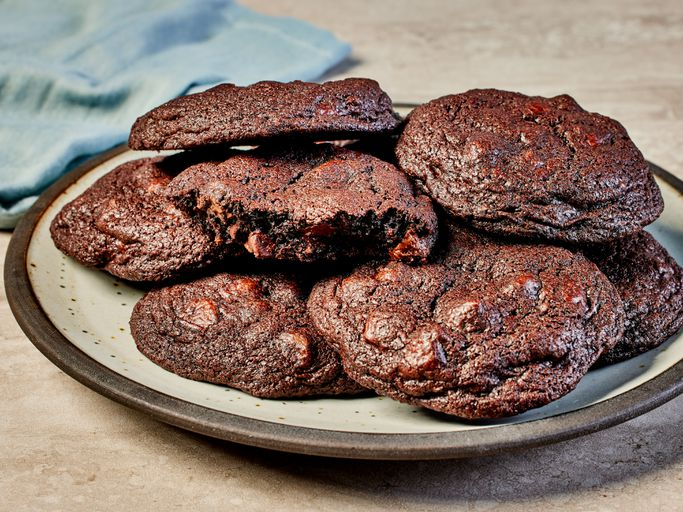

Chocolate Chocolate Chip Cookies

Description
These chocolate chocolate chip cookies are made with cocoa powder and chocolate chips to guarantee chocolaty flavor in every bite. My kids love them!
Ingredients
- Sugar: The recipe starts with 1 ½ cups white sugar.
- Butter: Beat the sugar with two sticks of softened butter.
- Eggs: Two eggs lend moisture and act as a binding agent, which means they help hold the dough together.
- Vanilla: Vanilla extract enhances the overall flavor of the chocolate chocolate chip cookies.
- Flour: All-purpose flour gives the cookie dough structure.
- Cocoa powder: They wouldn’t be chocolate chocolate chip cookies without cocoa powder!
- Baking soda: Baking soda acts as a leavener, which means it helps the cookies rise.
- Salt: A pinch of salt enhances the overall flavor, but it won’t make the cookies taste salty.
- Chocolate chips: You’ll need two cups of semisweet chocolate chips.
- Walnuts (optional): Walnuts are optional, but they add welcome crunch.
Steps
- Beat the wet ingredients in one bowl and the dry ingredients in another.
- Add the dry mixture to the wet mixture, then stir in the chocolate chips and nuts.
- Drop the dough onto baking sheets.
- Bake in the preheated oven until the cookies are set.
Home